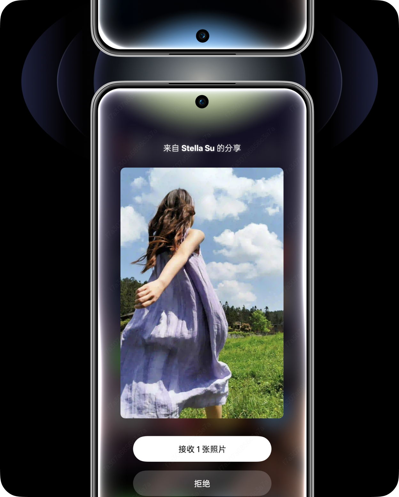
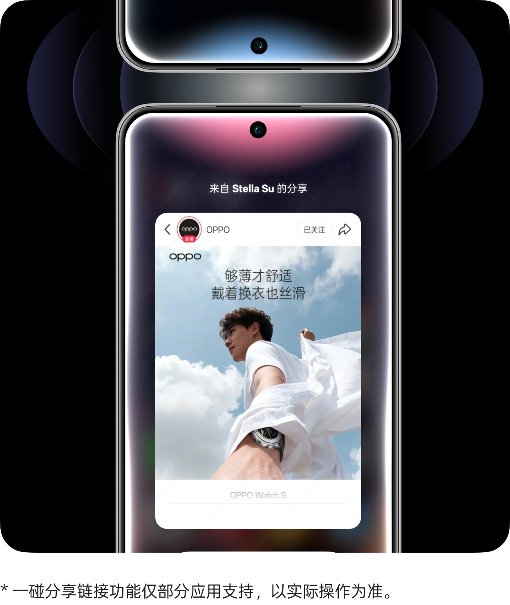
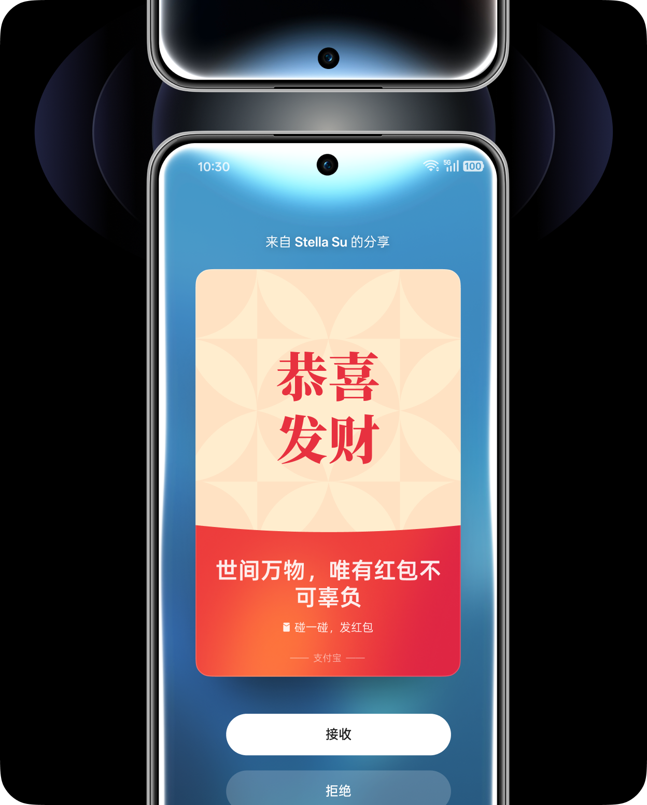
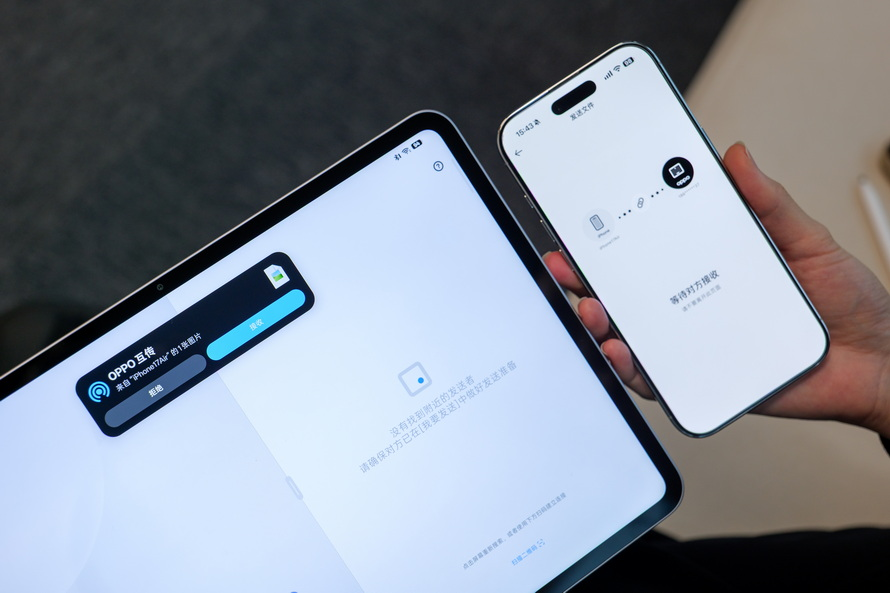

生态互联：围绕任务延续体验
负责 OPPO 生态互联体验及下一年度规划中的相关设计工作，覆盖近场连接、跨平台任务接续和外部设备接入。
设计目标
让用户离开原设备后还能继续手上的任务。
规划时检查三件事：用户能否找到并连上目标设备，切过去后还需要做多少重复操作，以及控制权是否仍清楚。以把手机上的文档交到电脑为例，设计评估从「发现设备」开始，直到用户在电脑上能继续使用文件。
- 连接 · 系统近场通信 以蓝牙、Wi-Fi 支撑设备发现与连接，覆盖电话、短信、互传和分享。用户能辨认目标设备，并知道连接是否成功。
- 接续 · 办公与学习 通过 Windows、Mac 和 iOS 端的 OPPO 互联，让文件和任务跨设备流转。用户知道内容去了哪里，并能在下一台设备上继续处理。
- 控制 · 生态接入 覆盖车联、家居和配件场景，包括上汽、美的、格力，以及耳机和手写笔。明确哪台设备发起或执行操作，以及用户如何确认、取消或接管。
近场连接
让身边的设备能发现彼此，并通过贴近动作发起分享。负责电话、短信及蓝牙、Wi-Fi 等系统连接体验，一碰互传是其中面向当面分享的场景。
以 OPPO 和一加手机为例，双方开启蓝牙、NFC 和 WLAN 后，发送者将两台手机的 NFC 区域贴近，再按提示上滑发送。接收端亮屏解锁后，可以查看分享来源和内容，再决定是否接收。照片、文件、链接、联系人和支付宝红包都可以通过贴近发起分享。操作条件与支持范围见 ColorOS 官方一碰互传指南。
一碰互传场景横滑浏览 · 点击看原图

照片互传 · 预览照片并选择接收或拒绝 
链接分享 · 在接收端预览分享内容 
红包分享 · 确认接收支付宝红包
跨端协同
让办公和学习任务能在另一台设备上继续。
负责 Windows、Mac 和 iOS 端的 OPPO 互联体验，围绕文件传输、共享和设备连接组织跨端路径。规划阶段也在探索手机、耳机与 AI 如何分担输入、问答和信息接续，通过交互原型讨论分工。
速率与延迟来自新浪观潮引用的第三方实测，实际表现随设备和网络环境变化。

生态接入
把手机上的操作延伸到车机和家居设备。
车机、家居和配件各有自己的能力。系统优先解决跨设备或跨生态的连接与协同，例如用手机与车联动，或在手机上控制家居设备。OPPO 开发者大会的试用场景提供了具体展示。
选可公开的车机或家居演示，左侧放手机入口，右侧放外部设备的反馈。标注哪一端发起、哪一端执行。
阶段成果
近场连接、跨端协同和生态接入属于目前的职责范围。
手机、耳机与 AI 协同处于早期探索，阶段产出是供团队讨论和验证的方向与原型。从行业公开实践看，跨设备协同正从文件传递走向任务与状态接续。随着 AI 参与理解上下文和协助执行，体验设计需要明确哪些信息可随任务流转、由哪台设备接手，以及用户何时确认、接管或撤回操作。